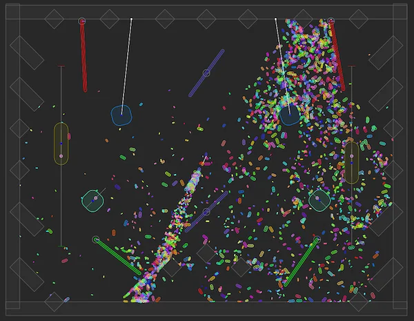

Note: This documentation is about writing C# scripts using the Unity.U2D.Physics API. To use 2D physics in the Unity Editor using components like the Rigidbody 2D component, refer to 2D physics instead.
To help you visualize 2D physics objects during development, Unity automatically draws the shapes you create with the Physics Core 2D API.
Unity draws the shapes automatically in the Unity Editor. You can also enable Unity drawing the shapes in builds.

Unity draws your shapes automatically in the Scene view, the Game view, and when you enter Play mode.
To configure debug drawing, follow these steps:
PhysicsWorldDefinition component. For more information, refer to Create a physics world.Draw. For example Draw Options selects which features to draw, and Draw Colors sets the colors Unity uses.To set a different color for a specific shape, follow these steps:
PhysicsShapeDefinition component. For more information, refer to Create a physics object.To configure the properties in your C# script instead, adjust the similarly named properties of your PhysicsWorldDefinition, PhysicsBodyDefinition, or PhysicsShapeDefinition objects.
To draw in a build, follow these steps:
To draw your own shapes, use the Draw methods of the world object. For example:
// Get the main physics world.
PhysicsWorld world = PhysicsWorld.defaultWorld;
// Draw a line from the origin to (30, 40) in "cornflower blue".
world.DrawLine(Vector2.zero, new Vector2(30f, 40f), Color.cornflowerBlue);
// Draw a circle from the origin to (30, 40) in "forest green".
world.DrawCircle(new Vector2(30f, 40f), 2f, Color.forestGreen);
// Draw a point with a 3 pixel radius at (-5, 10) in "gold".
world.DrawPoint(new Vector2(-5f, 10f), 3f, Color.gold);
Shapes only last for one frame. To draw them for longer, use the lifetime property.
// Set lifetime as 5 seconds.
const float lifeTime = 5f;
// Draw a circle at a specific position in blue for 5 seconds.
world.DrawGeometry(circleGeometry, physicsTransform, Color.cornflowerBlue, lifeTime);